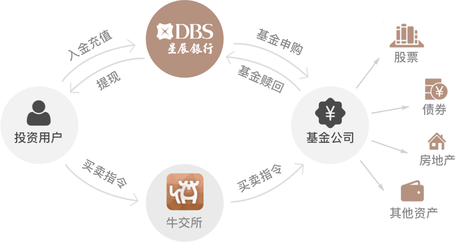

“亚洲最安全银行”星展银行资金托管

星展银行是新加坡最大的商业银行，信用评级高达AA-和Aa1，远高于国开行和工农中建四大国有银行。
星展银行被英国《金融时报》评选为“亚洲最佳银行”。被《环球金融》杂志（Global Finance）评选为“亚太区最佳银行”，连续七年位列“亚洲最安全银行”。

海外公募基金、美元债券是发达国家最成熟的理财产品，牛交所的每一支基金都受美国证券交易委员会、卢森堡证券金融监督委员会，爱尔兰中央银行严格监管。
美国证券交易委员会
卢森堡证券金融监督委员会
爱尔兰中央银行
星展银行是新加坡最大的商业银行，信用评级高达AA-和Aa1，远高于国开行和工农中建四大国有银行。
星展银行被英国《金融时报》评选为“亚洲最佳银行”。被《环球金融》杂志（Global Finance）评选为“亚太区最佳银行”，连续七年位列“亚洲最安全银行”。
开曼群岛是阿里巴巴、可口可乐、宝洁等世界知名企业的注册地，如今已崛起成为继纽约、伦敦、东京、香港之后的世界第五大国际金融中心。
CIMA（英属开曼群岛金融管理局）是开曼群岛金融服务业的官方监管机构，在国际金融服务业中有十足的影响力。